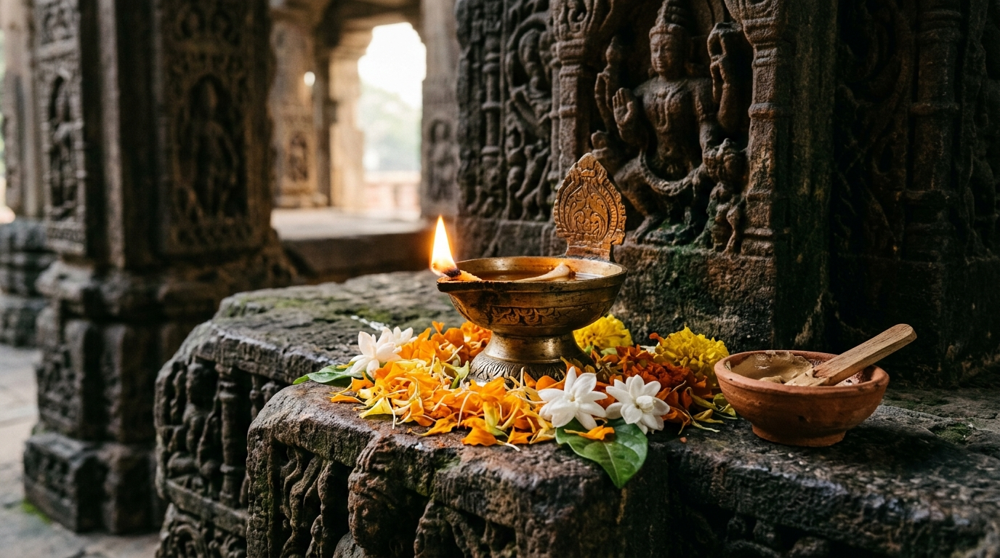

Discover stories, symbols, and timeless wisdom.
E-Heritage is an interactive learning companion for exploring Hindu stories, sacred shlokas with Devanagari, epic timelines, festivals, murti iconography, and respectful inquiry powered by E-Heritage AI.

— A Hanuman-inspired lesson

Value: Inner Stillness
Shloka connection: Gita 2.70 advises remaining steady like the deep ocean.
Try it today: Take three slow breaths before responding when someone frustrates you.
Choose what you want to learn
Every lesson includes student-friendly explanations, historical context, modern application, and reminders of diverse regional interpretations.

Knowledge Quizzes & Flashcards
Test your understanding through student challenges and flip through study cards to master key concepts.
Loading Heritage Question...
Dharma
[Dhur-muh]
(Tap card to flip for meaning & root)
Living in Truth & Duty
Living thoughtfully in alignment with truth, ethical duty, and responsibility.
Murti & Artifact Vision Guide
Analyze traditional sacred art by uploading a photo, using your device camera, or selecting visible symbols. Powered by E-Heritage Multimodal AI when connected.
Choose Photo or Camera
Upload a photo or capture an image of traditional artwork, murtis, or temple carvings for AI iconographic analysis.
Ask E-Heritage AI
Curious about why a tradition is observed, what a story means, or how values connect to school and family? Ask questions safely.
Ask E-Heritage
Cultural & philosophical questions answered with respectful scriptural groundingFuture Planning: What We Are Building Next
Rather than staying just an online classroom, E-Heritage is stepping directly into our local towns and neighborhoods. We are planning real-world initiatives: teaming up with local institutions like the Manteca Historical Center and regional societies, hosting community meetings where people gather to discuss heritage, launching school and city youth clubs, and branching out this platform so it proudly supports and sponsors cultural heritage for all world religions.
Teaming Up with Local Centers (Manteca & Beyond)
Heritage begins right in our own backyards. We are planning direct partnerships with local community hubs, starting right here with the Manteca Historical Society & Museum (Manteca Historical Center) and expanding to regional historical centers across neighboring cities:
- Sparking Local Heritage Pride: Working side-by-side with hometown museums to connect ancient ancestral roots with the stories of local community pioneers and diverse cultural families.
- Interactive Town Exhibits: Co-hosting educational pop-up exhibits and hands-on artifact displays at community libraries and historical centers.
- Expanding Beyond Manteca: Reaching out to historical societies across the Central Valley and Northern California to build a unified regional heritage alliance.
Hosting Community Heritage Meetings
Preservation starts when people sit down together and talk. We will organize and host recurring, open community gatherings where neighbors of all ages and backgrounds share and celebrate culture:
- "Our Heritage, Our Roots" Roundtables: Free community discussions where residents bring family heirlooms, photo albums, and ancestral traditions to share with neighbors.
- Listening to Elders: Creating respectful multigenerational spaces where students and youth sit with community elders to listen to firsthand oral histories before they are forgotten.
- Cross-Cultural Learning: Encouraging open, respectful conversations that celebrate diversity, build mutual understanding, and break down cultural divides.
School Clubs & City Heritage Clubs
Youth shouldn't just read history—they should actively help protect it. We are building a network of student-driven clubs in our schools and across our cities:
- Middle & High School Chapters: Launching student-led E-Heritage clubs where students explore ancient cultures, debate philosophical lessons, and organize school culture days.
- City-Wide Youth Heritage Clubs: Empowering teens across Manteca and surrounding cities to lead local monument cleanups, library history tours, and heritage scavenger hunts.
- Student Storytellers: Equipping students with mobile storytelling tools to document local landmarks, festival celebrations, and family recipes.
Sponsoring Cultural Heritage for All Religions
We are expanding the E-Heritage platform so it branches out to actively support, sponsor, and showcase the profound cultural heritage and artistic traditions of every world religion and ancient faith:
- All Traditions Welcome: Building dedicated educational hubs for Dharmic traditions (Hinduism, Buddhism, Jainism, Sikhism), Abrahamic faiths (Judaism, Christianity, Islam), and Indigenous & Ancient heritages (Shinto, Zoroastrianism, Native American, African).
- Focus on Art, Architecture & Ethics: Highlighting the universal virtues that unite all religions—peace, truth, compassion, selfless charity, and sacred respect for nature.
- Sponsoring Inclusive Education: Providing free digital interactive lessons, timelines, and architectural guides so students anywhere can learn about any world religion with authenticity and dignity.